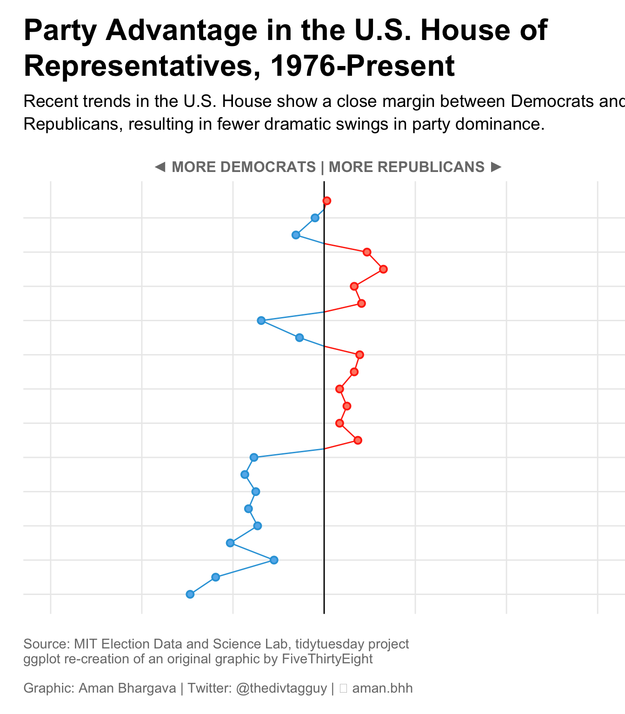
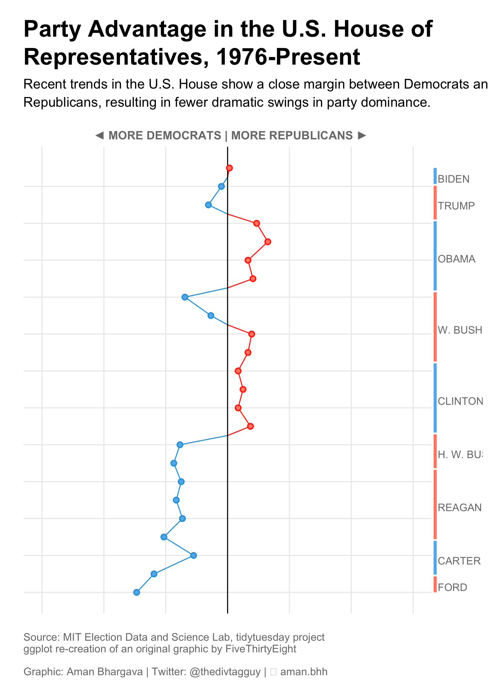

About
This chart uses a vertical line chart to show the party advantage in the U.S. House of Representatives from 1976 to the present. The chart is inspired by a graphic from FiveThirtyEight and has been created by Aman Bhargava.
Thanks to him for sharing its work!
Libraries
First we start by loading the necessary libraries.
Note: Install urbnmapr with
devtools::install_github("UrbanInstitute/urbnmapr") since
it’s not on CRAN.
Dataset
The main dataset is retrieved from the TidyTuesday GitHub repository.
path <- "https://raw.githubusercontent.com/rfordatascience/tidytuesday/master/data/2023/2023-11-07/house.csv"
data <- read.csv(path)
path <- "https://github.com/holtzy/R-graph-gallery/blob/master/DATA/democrats-and-republicans.csv?raw=true"
path <- "DATA/democrats-and-republicans.csv"
advantage_df <- read.csv(path)
path <- "https://github.com/holtzy/R-graph-gallery/blob/master/DATA/US-presidents.csv?raw=true"
path <- "DATA/US-presidents.csv"
presidents_df <- read.csv(path)Creating the right chart
- Use
ggplot()to create the base plot - Add segments representing each president’s term, colored by party
- Add text labels for each president’s name
- Customize the theme to remove unnecessary elements
- Set up the y-axis scale to align with the main chart
- Use
coord_flip()to make the chart vertical
right_chart <- ggplot() +
geom_segment(
data = presidents_df,
aes(
x = Start_Year,
y = 330,
xend = End_Year,
yend = 330,
colour = prez_party
),
linewidth = 1.5,
show.legend = FALSE
) +
geom_text(
data = presidents_df,
aes(
x = (Start_Year + End_Year) / 2 + 0.1,
y = 400,
label = president,
),
color = "#7A7A7A",
size = 3.8,
hjust = 0, # Center the text horizontally
vjust = 1, # Adjust vertical position of text,
show.legend = FALSE
) +
scale_y_continuous(
limits = c(300, 1500),
position = "left"
) +
scale_color_manual(values = c("#64B6EC", "#FF8972")) +
theme_void() +
theme(plot.margin = margin(t = 0, r = 0, b = 0, l = 0, "points")) +
coord_flip()
right_chart
Creating the left chart
- Use ggplot to create the base plot with year on the y-axis and advantage on the x-axis
- Add a line geom to show the trend over time
- Add a horizontal line at
y=0to separate Democrat and Republican advantage - Add points to highlight non-zero advantage values
- Customize the theme, colors, and labels to match the desired style
- Set up the scales for x and y axes, including custom breaks and labels
- Add title, subtitle, and caption to provide context for the chart
left_chart <- advantage_df %>%
ggplot(aes(
x = year,
y = advantage,
color = majority,
fill = majority
)) +
geom_line(aes(group = 1), show.legend = FALSE) +
geom_hline(yintercept = 0, aes(linewidth = 0.5, alpha = 0.8)) +
geom_point(
shape = 21,
data = . %>% filter(advantage != 0),
size = 2,
stroke = 1,
show.legend = FALSE
) +
coord_flip() +
theme_minimal() +
theme(
plot.margin = margin(15, 0, 15, 0),
panel.grid.major.x = element_line(),
panel.grid.minor.x = element_blank(),
panel.grid.minor.y = element_blank(),
panel.border = element_blank(),
axis.title = element_text(
colour = "#7A7A7A",
size = 12,
face = "bold",
),
axis.ticks.x = element_blank(),
axis.ticks.y.right = element_line(),
axis.text = element_text(
colour = "#7A7A7A",
family = "DecimaMonoPro",
size = 12,
face = "bold"
),
plot.title = element_text(
size = 24,
hjust = 0,
lineheight = 1,
face = "bold",
margin = margin(b = 10)
),
plot.subtitle = element_text(
hjust = 0,
lineheight = 1.1,
size = 14,
margin = margin(b = 20)
),
plot.caption = element_text(
hjust = 0,
colour = "#7A7A7A",
size = 11,
margin = margin(t = 20)
)
) +
scale_color_manual(values = c("#FF330F", "#2FA3DC")) +
scale_fill_manual(values = c("#FF8972", "#64B6EC")) +
scale_y_continuous(
breaks = c(-300, -200, -100, 0, 100, 200, 300),
labels = function(x) {
ifelse(x == -300, paste0(abs(x), " seats"), abs(x))
},
limits = c(-300, 300),
position = "right"
) +
scale_x_continuous(breaks = seq(1976, 2023, by = 4)) +
labs(
x = "",
y = str_to_upper(" ◄ More Democrats | More Republicans ►"),
title = str_wrap(
"Party Advantage in the U.S. House of Representatives, 1976-Present",
width = 50
),
subtitle = str_wrap(
"Recent trends in the U.S. House show a close margin between Democrats and Republicans, resulting in fewer dramatic swings in party dominance.",
width = 75
),
caption = "Source: MIT Election Data and Science Lab, tidytuesday project \nggplot re-creation of an original graphic by FiveThirtyEight\n\nGraphic: Aman Bhargava | Twitter: @thedivtagguy | 🔗 aman.bh"
)
left_chart
Combine the charts with patchwork
- Use the patchwork library to combine the two charts
- Adjust the relative widths of the charts using
plot_layout()

Going further
You might be interested in:
- Learning more about line charts
- Use a bump chart to highlight changes over time
- Use a waffle chart to highlight changes over time